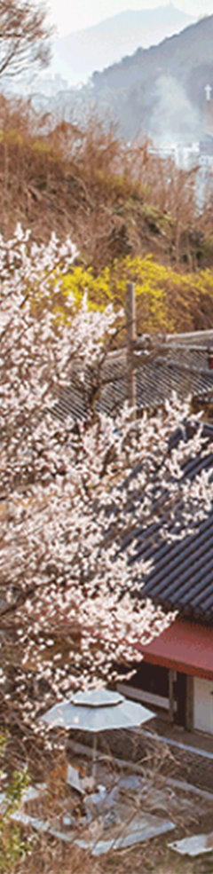
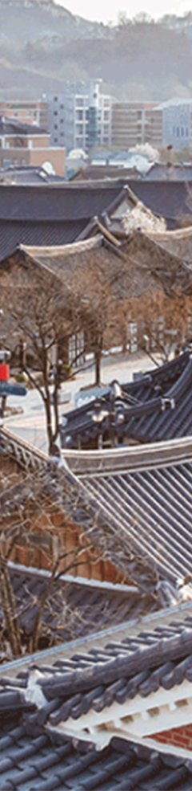
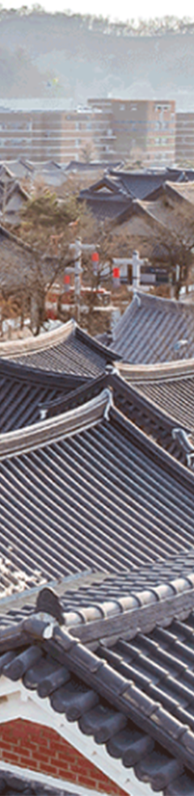

전주한옥마을
우리나라 근대 주거문화 발달과정의 중요한 공간으로 중요 문화재와 20여개의 문화시설이 산재되어 있으며, 韓스타일이 집약된 대한민국 대표 여행지입니다.



우리나라 근대 주거문화 발달과정의 중요한 공간으로 중요 문화재와 20여개의 문화시설이 산재되어 있으며, 韓스타일이 집약된 대한민국 대표 여행지입니다.
1977년
교동과 풍남동 일대 한옥보존지구로 지정
1987년
제4종 미관지구로 지정(2층 이하로 건축 제한)
1999년
전통문화특구 기본사업계획 수립(용역)
2002년
전주한옥보존지원조례 제정(한옥 개·보수비 지원 등)
2003년
지구단위계획 결정 고시
2009, 2011, 2013, 2017 일부변경
2005년
전통문화중심도시 전주 육성사업 기본구상 모델
2006년
대통령자문위원회에서 "지속가능한 마을"로 선정
2010년
"한국관광의 별" 선정, "국제슬로시티" 지정
2011년
"한국관광의 으뜸명소" 지정
2012년
지방브랜드 세계화사업 시범사업 선정
2013년
국토교통부 대통령 업무보고 시
도시재생 모범사례로 보고
2014년
인문도시 선정(교육부)
2015년
한국문화체험의 관광콘텐츠화 대표사례소개
(문화융성 방향과 추진, 문체부)
인터넷 소셜커머스 기업인 쿠팡이 조사한 여름 휴가철
선호도 1위
문화체육관광부와 한국관광공사가 선정한
대한민국 대표 관광명소
2016년
5월 가정의 달 모바일 내비게이션 앱을 통한 조사결과
가족 여행지 1위
한옥마을 여행객 천만 관광객 시대 돌입
한옥마을 지구 내 금연구역 전역 확대로
여행하기 좋은 한옥마을 조성
전주 한옥마을 "국제슬로시티 재지정"
2017년
현대엠엔소프트 네비게이션 앱 데이터분석 결과
가장 많이 찾은 국내 여행지 1위
한국관광공사와 SKT 공동으로 티맵 분석결과
국민선호 관광지 광역별 1위
2018년
북한에 소개하고 싶은 명소 1위 선정
(엘리트학생복, 10대청소년대상)
2019년
3년 연속 연간 천만 관광객 방문 달성
2회 연속 지역문화지수가 전국 229개 지자체 중 1위
국제슬로시티 어워드 오렌지달팽이상(대상) 수상
관광지도 발송 신청: 063-281-2891(경기전관광안내소)
"
실제 여행 컨디션에 가장 많은 영향을 미치는 숙박과 음식에 대해서
여행객의 관점에서 더 나은 서비스를 제공하기 위해 전주한옥마을 내의
한옥 체험업과 음식점을 대상으로 전문가와 소비자 평가 등
엄격한 심사를 통해 선정된 우수업소에 전주시에서 인증을 부여하는 제도입니다.
전주 한옥마을 100대 체험여행
골목길 코스
제 1코스
전주 한옥마을에서 福 받아가기!
긍정적인 기운과 복이 가득한 골목길을 함께 걸어 보세요.
제 2코스
전주 한옥마을에서 인생사진 찍어가기!
골목길 구석구석 숨어있는 포토존에서 촬영하고 스탬프투어를 완주해보세요.
제 3코스
어릴 적 추억이 떠오르는 골목길 이야기 감상하기!
전주 한옥마을의 역사가 담겨있는 골목길들을 한곳한곳 둘러보세요.
문화유산 코스
한옥마을 문화유산 구경뿐만 아니라 체험까지도 즐길 수 있는 일석이조의 알차고 뜻 깊은 문화유산 코스입니다.
뜻깊은 문화유산과 함께해 더욱 뜻깊고 유익한 문화유산 코스, 아래 6개존 모두 완주하면 인센티브를 제공해드립니다.
낭만체험 코스
전주한옥마을 별별 체험단 체험 공방에서 스탬프 찍고 혜택도 받아보세요.
스탬프 투어 성공 시 원하는 체험을 즉시 1만원 할인!
관광안내소,각 체험공방에 비치되어 있는 스탬프 투어 용지를 가지고 별별 체험단 공예 공방
29개소 중 12개소 이상 방문하여
스탬프 투어 용지에 '직접' 찍으면 성공!
스탬프 투어 용지는 관광안내소 또는 각 체험공방에 용지가 비치되어 있습니다.
한옥마을 관광 안내소
063) 282 - 1330
전라북도 전주시 완산구 기린대로 99
휠체어, 유모차 대여
단체 해설 투어 문의
경기전 관광 안내소
063) 281 - 2891, 287 - 1330
전라북도 전주시 완산구 태조로 44
한옥마을 지도 신청
오목대 관광 안내소
063) 282 - 1335
전라북도 전주시 완산구 태조로 6
휠체어, 유모차 대여